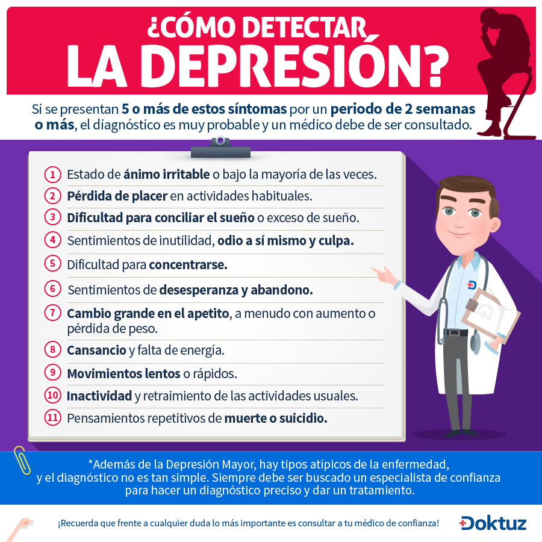

Depresión
-Gran cantidad de casos de Depresión son después del Parto
-Si no se trata a tiempo puede llevar al Suicidio
-El año pasado se realizó la Encuesta Nacional de Salud y mostró que las mujeres chilenas tienen 5 veces más Depresión que los hombres
